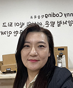
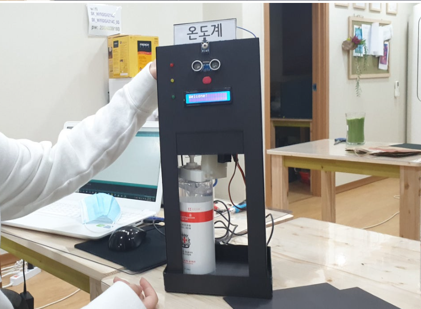
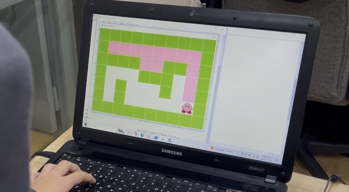
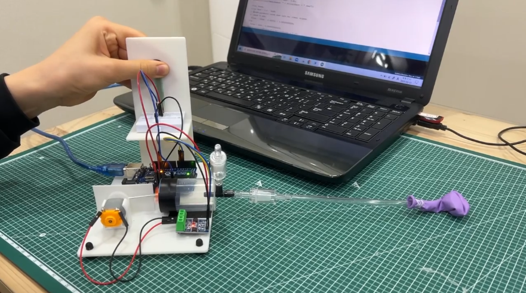

AI가 만든 프로그램은 완벽해 보여도 데이터 누락, 잘못된 연결과 가짜 값처럼 눈에 잘 보이지 않는 오류가 남을 수 있습니다.
6년 연속SW영재원 합격
95% 이상SW영재원 합격률
4년 연속선린인터넷고 합격
90%선린인터넷고 합격률
※ 학원 자체 집계 기준이며 연도와 지원 조건에 따라 결과는 달라질 수 있습니다.
FIND YOUR PATH
우리 아이에게 필요한 과정부터
확인해 보세요
정규 코딩부터 학교 평가, 영재교육원과 진학까지 목표에 맞는 준비 과정을 안내합니다.

교육학 × 컴퓨터공학
코딩 기본기 × AI 활용
코딩 기본기 × AI 활용
WHY SUNNYCODING
AI가 코딩을 잘할수록
기본기가 더 중요합니다
AI는 놀라울 만큼 빠르게 코드를 만들지만, 데이터가 맞는지, 논리가 정확한지, 결과가 효율적인지는 사람이 확인해야 합니다. 교육학·컴퓨터공학을 전공한 원장이 아이가 AI의 결과를 그대로 믿지 않고 판단하고 검증할 수 있는 코딩 기본기를 직접 지도합니다.
원장이 직접 AI와 데이터 프로젝트를 개발하며 확인한 결론은 분명했습니다. 겉으로 완벽해 보이는 결과물도 코딩 지식 없이 내부의 오류를 찾아내기 어려웠고, 프로젝트가 커질수록 사람의 명확한 지시와 검증 능력이 더 중요했습니다. 그래서 써니코딩은 바이브 코딩을 서두르기보다 아이가 먼저 읽고, 생각하고, 직접 해결하는 힘을 기릅니다.
원장 직접 설계학생의 수준과 목표를 진단해 개별 커리큘럼을 설계합니다.
자체 커리큘럼학생 반응과 기술 변화를 반영해 교재와 수업을 연구합니다.
프로젝트 중심배운 내용을 앱·웹·게임·AI·로봇 결과물로 완성합니다.
과정까지 연결수행평가·세특·영재원·진학에 필요한 역량을 함께 키웁니다.
AI EDUCATION PRINCIPLES
AI가 코딩하는 시대,
코딩을 아는 아이가 앞서갑니다
AI에게 명확하게 지시하고, 결과를 검증하고, 잘못된 부분을 바로잡으려면 아이가 먼저 코딩의 원리와 문제 해결 과정을 배워야 합니다.
프로젝트가 커질수록 무엇을 만들지, 어떤 데이터를 사용할지, 결과를 어떻게 검증할지 구체적으로 지시하는 힘이 중요합니다.
어린 시기에 AI가 답을 대신하면 스스로 읽고 고민하고 시행착오를 겪는 학습 과정이 줄어들 수 있어 활용 시기를 구분합니다.
초등 5~6학년코딩과 데이터 가공의 기본 원리를 배우고 AI 활용의 토대를 만듭니다.
중등충분한 기본기를 바탕으로 AI를 활용하고 결과를 검증하는 프로젝트로 확장합니다.
고등심화 프로젝트를 수행하며 정보 과목 수행평가와 세특, 진로 포트폴리오까지 연결합니다.
PROJECTS
배운 내용은
눈에 보이는 결과물로
기술을 따라 하는 데서 끝내지 않고 문제를 발견하고, 설계하고, 설명할 수 있는 프로젝트로 완성합니다.




RESULTS & STORIES
꾸준한 과정이 만든
합격과 성장의 기록
단기간의 결과보다 학생이 스스로 완성해 가는 힘을 중요하게 생각합니다.
최근 합격·수상
- 2025교대 SW영재원 합격
- 2025서울시 SW영재원 3명 합격
- 2025서울시 SW영재원 금상
- 2025선일초 교대 창의코딩대회 대상
- 2024서울시 SW영재원 7명 합격
학부모가 전한 변화
“생각하는 힘을 키워준 수업이에요. 아이가 결과만 말하는 것이 아니라 풀이 과정을 설명하기 시작했어요.”
“취미로 시작했는데 프로젝트를 완성하면서 아이가 진로를 구체적으로 생각하게 됐어요.”합격 수기 보기